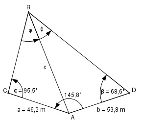

Aufgabe 201 Für die Projektierung einer Brücke über einen Fluss braucht man den Abstand zwischen den markanten Punkten A und B. Um ihn zu ermitteln, legt man an einem Ufer wegen Sichtbehinderungen 2 Standlinien AC und AD mit AC = 46,2 m, AD = 53,8 m und dem eingeschlossenen Winkel CAD = 145,8° fest. Weiterhin werden die Winkel BCA = 95,5° und ADB = 68,6° gemessen. Wie groß ist AB?

Im Dreieck BCA: Sinussatz: a x -------- = ------- |*sin α sin φ sin α a * sin α x = ------------ sin φ Im Dreieck ADB: Sinussatz: b x ------- = ------- |*sin β sin ψ sin β b * sin β x = ------------ sin ψ a * sin α b * sin β ------------- = ----------- |*sin φ sin φ sin ψ b * sin β * sin φ a * sin α = -------------------- |:sin β sin ψ a * sin α b * sin φ ------------ = ----------- |:b sin β sin ψ sin φ a * sin α -------- = ----------- = k sin ψ b * sin β 46,2 m * sin 95,5° 46,2 m * 0,9954 k = -------------------- = ------------------ = 53,8 m * sin 68,6° 53,8 m * 0,9311 = 0,918 Ab hier ähnliche Rechnung wie bei Aufgabe 200. φ + ψ = 360° - 145,8° - 95,5° - 68,6° = 50,1° φ - ψ 0,918 - 1 50,1° tan -------- = ----------- * tan ------- = 2 0,918 + 1 2 0,918 - 1 = ------------ * 0,4674 0,918 +1 φ - ψ φ - ψ tan -------- = -0,02 --> ------- = - 1,15° |*2 2 2 φ – ψ = - 2,3° φ + ψ = 50,1° ---------------- 2φ = 47,8° |:2 φ = 23,9° φ + ψ = 50,1° 23,9° + ψ = 50,1° |-23,9° ψ = 26,2° a * sin α 46,2 m * sin 95,5° x = ------------ = --------------------- = sin φ sin 23,9° 46,2 m*0,9954 = --------------- = 113,5 m = AB 0,4051